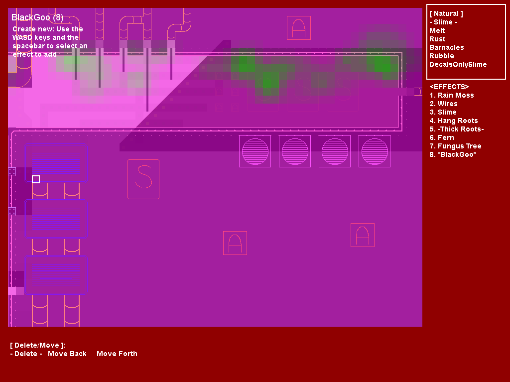
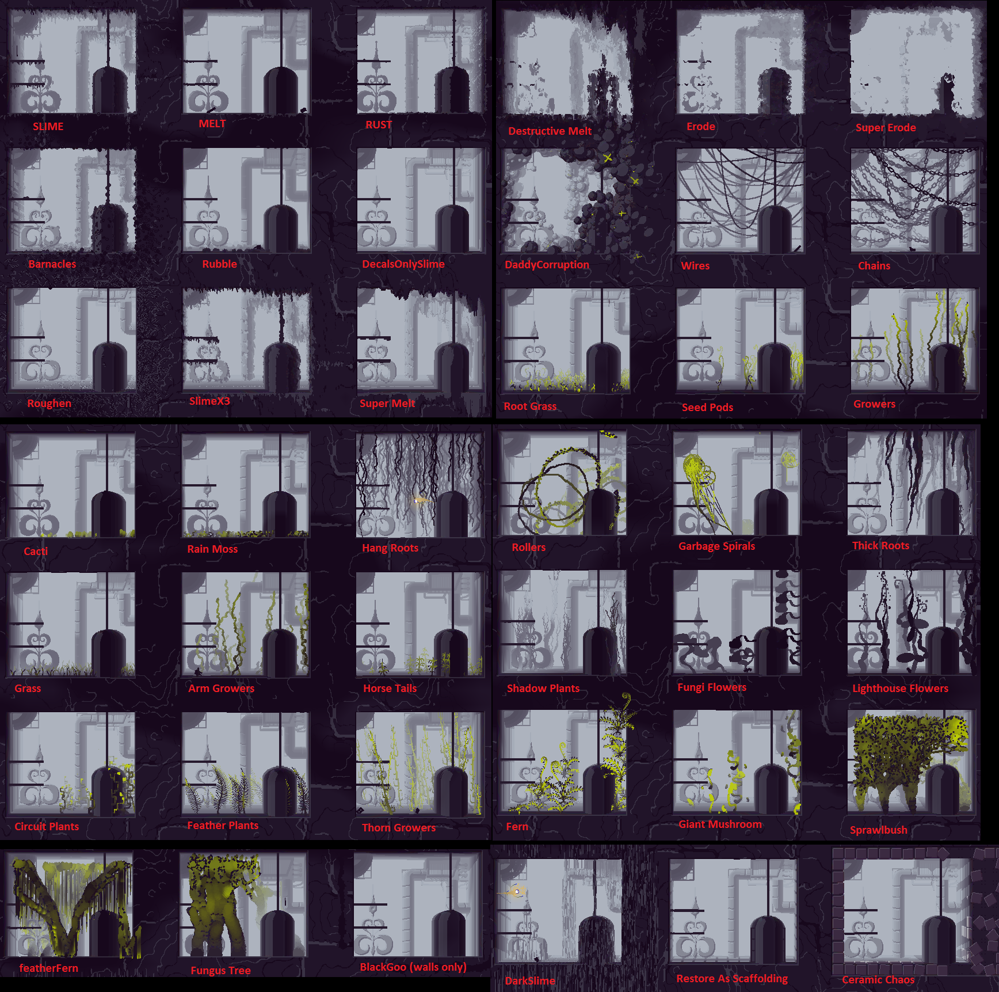

Level Editor: Effect Editor

The effect editor is used to modify and add filters to the level's geometry and tiles. This is the main way you make your levels "look good." It is largely up for you to paint the effects that will fill your rooms, and all of these effects can be seen in a large gallery picture at the end of the article. However there are a few pointers that hold true for most rooms in Rain World.
- Slime is your friend. Most of Rain World has a light to medium dose of slime all over the room. This effects adds a more messy drippy border to the details of your room, and prevents it from looking too clean.
- BlackGoo is used to create the black outlines to rooms. Apply this effect before the slime is applied if you want a more messy border! Applies in large blots over certain tiles, and will not appear over empty tiles. This effect only applies to layer 1, and will NOT draw on: Random machines, trash, and the smallpipes materials. It will also not draw on almost all tiles.
- Dirt and large trash make good material borders for natural rooms where you want the black goo to appear.
- Large trash covered in black goo works well for the borders of machinery inside walls, and mechanical areas.
- Concrete blocks, and large trash work well for the borders of more urban areas. However the more blocky materials are often a bit harder to make look good. Don't be discouraged, keep playing around until you are happy with the effects and tiles!
- Some effects work best with certain tiles, and certain effects require certain tiles under them to properly be applied. ( Such as ceramic chaos effect, requiring the ceramic tile material on the walls!)
- Unlike other effects, the BlackGoo effect starts applied to the whole room. Instead of using left-click to paint it in, use right-click to erase the areas you don't want it to apply to.
Controls:
Effect library:
- A, D - Changes effect library's category
- W, S - Scrolls through effect in current category
- E - Switches to editing previously applied effects.
- Space - Adds the selected effect.
Applied effects:
- W, S - Scrolls through effects applied in room
- N - Switches to adding new effects from the effect library.
- Space - edit selected effect
Effect editing:
- A, D - Scrolls through options in the effect's menu
- W, S - Changes the current effect's menu
- Space - activates selected option in effect menu
- Mouse left - Paints current effect
- Mouse right - removes current effect
- R - Grows cursor
- F - Shrinks cursor
- E or N - Switches back to the menus for editing or adding effects respectively.
Effect Gallery
Not all effects are shown in their best light here. Experiment and mix effects to create rooms that fit the style and shape of the regions or arenas you want to create!
